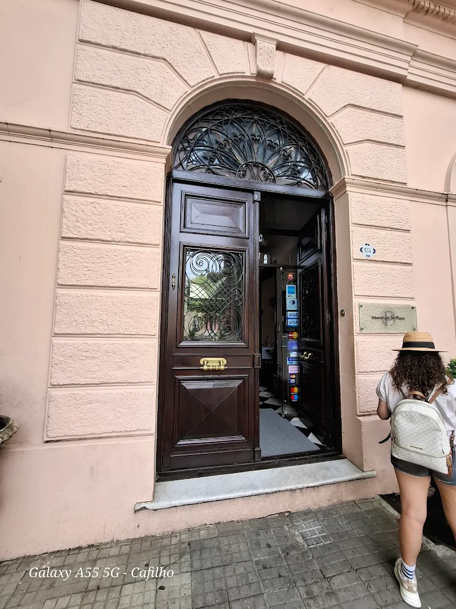
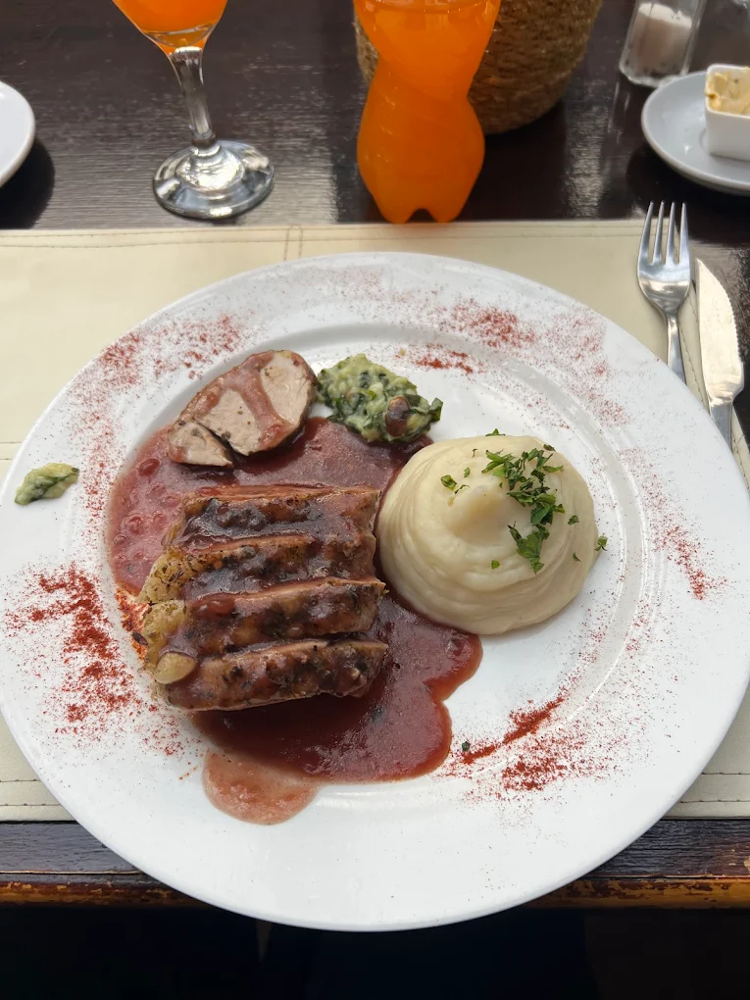
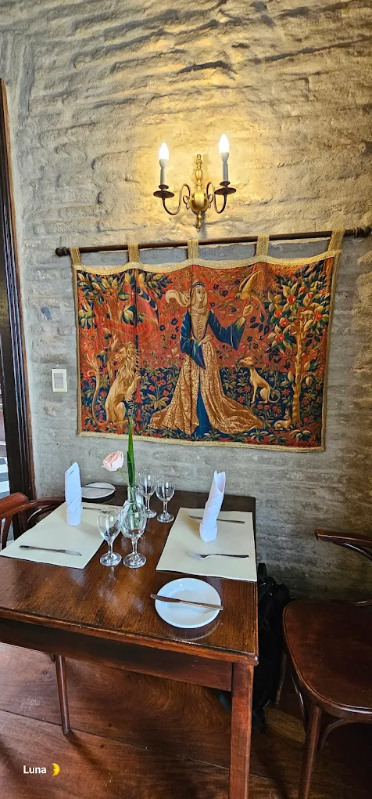
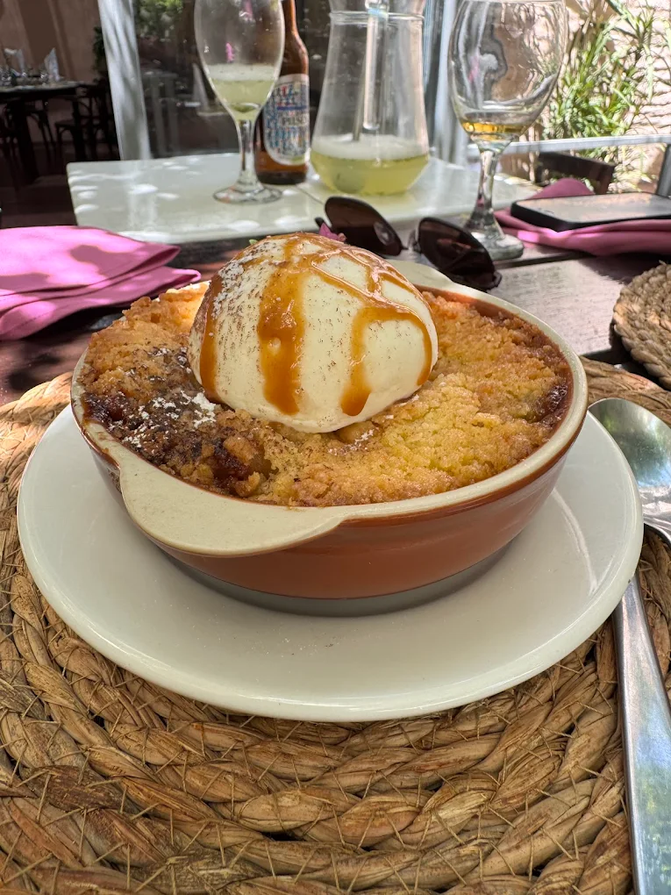

Enjoy a unique gastronomic experience at El Mesón de la Plaza, one of the most iconic restaurants in Colonia del Sacramento. Located in the heart of the Historic Quarter, surrounded by cobblestone streets and colonial architecture, this restaurant combines tradition, history, and exceptional cuisine.
With years of trajectory and a warm, authentic atmosphere, El Mesón de la Plaza offers a carefully crafted menu featuring both Uruguayan classics and international dishes. It is the perfect complement after a guided tour, allowing you to relax and enjoy a memorable meal in a truly historic setting.



